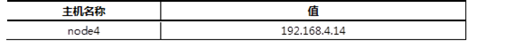

延续Day04的实验内容，演示块存储在KVM虚拟化中的应用案例，实现以下功能：
使用Ceph存储创建镜像。
KVM虚拟机调用Ceph镜像作为虚拟机的磁盘。
实现此案例需要按照如下步骤进行。
1）创建磁盘镜像。
[root@node1 ~]# rbd create vm1-image --image-feature layering --size 10G [root@node1 ~]# rbd create vm2-image --image-feature layering --size 10G [root@node1 ~]# rbd list [root@node1 ~]# rbd info vm1-image [root@node1 ~]# qemu-img info rbd:rbd/vm1-image image: rbd:rbd/vm1-image file format: raw virtual size: 10G (10737418240 bytes) disk size: unavailable
2）Ceph认证账户。
Ceph默认开启用户认证，客户端需要账户才可以访问，
默认账户名称为client.admin，key是账户的密钥，
可以使用ceph auth添加新账户（案例我们使用默认账户）。
[root@node1 ~]# cat /etc/ceph/ceph.conf //配置文件 [global] mon_initial_members = node1, node2, node3 mon_host = 192.168.2.10,192.168.2.20,192.168.2.30 auth_cluster_required = cephx //开启认证 auth_service_required = cephx //开启认证 auth_client_required = cephx //开启认证 [root@node1 ~]# cat /etc/ceph/ceph.client.admin.keyring //账户文件 [client.admin] key = AQBTsdRapUxBKRAANXtteNUyoEmQHveb75bISg==
3）部署客户端环境。
注意：这里使用真实机当客户端！！！
客户端需要安装ceph-common软件包，拷贝配置文件（否则不知道集群在哪），
拷贝连接密钥（否则无连接权限）。
[root@room9pc01 ~]# yum -y install ceph-common [root@room9pc01 ~]# scp 192.168.4.11:/etc/ceph/ceph.conf /etc/ceph/ [root@room9pc01 ~]# scp 192.168.4.11:/etc/ceph/ceph.client.admin.keyring \ /etc/ceph/
4）创建KVM虚拟机。
使用virt-manager创建2台普通的KVM虚拟机。
5）配置libvirt secret。
编写账户信息文件（真实机操作）
[root@room9pc01 ~]# vim secret.xml //新建临时文件，内容如下
<secret ephemeral='no' private='no'>
<usage type='ceph'>
<name>client.admin secret</name>
</usage>
</secret>
#使用XML配置文件创建secret
[root@room9pc01 ~]# virsh secret-define --file secret.xml
733f0fd1-e3d6-4c25-a69f-6681fc19802b
//随机的UUID，这个UUID对应的有账户信息
编写账户信息文件（真实机操作）
[root@room9pc01 ~]# ceph auth get-key client.admin //获取client.admin的key，或者直接查看密钥文件 [root@room9pc01 ~]# cat /etc/ceph/ceph.client.admin.keyring
设置secret，添加账户的密钥
[root@room9pc01] virsh secret-set-value \ --secret 733f0fd1-e3d6-4c25-a69f-6681fc19802b \ --base64 AQBTsdRapUxBKRAANXtteNUyoEmQHveb75bISg //这里secret后面是之前创建的secret的UUID //base64后面是client.admin账户的密码 //现在secret中既有账户信息又有密钥信息
6）虚拟机的XML配置文件。
每个虚拟机都会有一个XML配置文件，包括：
虚拟机的名称、内存、CPU、磁盘、网卡等信息
[root@room9pc01 ~]# vim /etc/libvirt/qemu/vm1.xml
//修改前内容如下
<disk type='file' device='disk'>
<driver name='qemu' type='qcow2'/>
<source file='/var/lib/libvirt/images/vm1.qcow2'/>
<target dev='vda' bus='virtio'/>
<address type='pci' domain='0x0000' bus='0x00' slot='0x07' function='0x0'/>
</disk>
不推荐直接使用vim修改配置文件，推荐使用virsh edit修改配置文件，效果如下：
[root@room9pc01] virsh edit vm1 //vm1为虚拟机名称
<disk type='network' device='disk'>
<driver name='qemu' type='raw’/>
<auth username='admin'>
<secret type='ceph' uuid='733f0fd1-e3d6-4c25-a69f-6681fc19802b’/>
</auth>
<source protocol='rbd' name='rbd/vm1'>
<host name='192.168.4.11' port='6789’/>
</source>
<target dev='vda' bus='virtio'/>
<address type='pci' domain='0x0000' bus='0x00' slot='0x07' function='0x0'/>
</disk>
延续前面的实验，实现Ceph文件系统的功能。具体实现有以下功能：
添加一台虚拟机，部署MDS节点。
主机的主机名及对应的IP地址如表-1所示。
表－1 主机名称及对应IP地址表
实现此案例需要按照如下步骤进行。
1）添加一台新的虚拟机，要求如下：
IP地址:192.168.4.14
主机名:node4
配置yum源（包括rhel、ceph的源）
与Client主机同步时间
node1允许无密码远程node4
2）部署元数据服务器
登陆node4，安装ceph-mds软件包
[root@node4 ~]# yum -y install ceph-mds
登陆node1部署节点操作
[root@node1 ~]# cd /root/ceph-cluster //该目录，是最早部署ceph集群时，创建的目录 [root@node1 ceph-cluster]# ceph-deploy mds create node4 //给nod4拷贝配置文件，启动mds服务
同步配置文件和key
[root@node1 ceph-cluster]# ceph-deploy admin node4
3）创建存储池
[root@fdfs_storage1 FastDFS]# mkdir -pv /data/fastdfs
4）修改配置文件。
[root@node4 ~]# ceph osd pool create cephfs_data 128 //创建存储池，对应128个PG [root@node4 ~]# ceph osd pool create cephfs_metadata 128 //创建存储池，对应128个PG
5）创建Ceph文件系统
[root@node4 ~]# ceph mds stat //查看mds状态
e2:, 1 up:standby
[root@node4 ~]# ceph fs new myfs1 cephfs_metadata cephfs_data
new fs with metadata pool 2 and data pool 1
//注意，现在medadata池，再写data池
//默认，只能创建1个文件系统，多余的会报错
[root@node4 ~]# ceph fs ls
name: myfs1, metadata pool: cephfs_metadata, data pools: [cephfs_data ]
[root@node4 ~]# ceph mds stat
e4: 1/1/1 up {0=node4=up:creating}
6）客户端挂载
[root@client ~]# mount -t ceph 192.168.4.11:6789:/ /mnt/cephfs/ \ -o name=admin,secret=AQBTsdRapUxBKRAANXtteNUyoEmQHveb75bISg== //注意:文件系统类型为ceph //192.168.4.11为MON节点的IP（不是MDS节点） //admin是用户名,secret是密钥 //密钥可以在/etc/ceph/ceph.client.admin.keyring中找到
延续前面的实验，实现Ceph对象存储的功能。具体实现有以下功能：
步骤一：部署对象存储服务器
1）准备实验环境，要求如下：
IP地址:192.168.4.15
主机名:node5
配置yum源（包括rhel、ceph的源）
与Client主机同步时间
node1允许无密码远程node5
修改node1的/etc/hosts，并同步到所有node主机
2）部署RGW软件包
[root@node1 ~]# ceph-deploy install --rgw node5
同步配置文件与密钥到node5
[root@node1 ~]# cd /root/ceph-cluster [root@node1 ~]# ceph-deploy admin node5
3）新建网关实例
启动一个rgw服务
[root@node1 ~]# ceph-deploy rgw create node5
登陆node5验证服务是否启动
[root@node5 ~]# ps aux |grep radosgw ceph 4109 0.2 1.4 2289196 14972 ? Ssl 22:53 0:00 /usr/bin/radosgw -f --cluster ceph --name client.rgw.node4 --setuser ceph --setgroup ceph [root@node5 ~]# systemctl status ceph-radosgw@\*
4）修改服务端口
登陆node5，RGW默认服务端口为7480，修改为8000或80更方便客户端记忆和使用
[root@node5 ~]# vim /etc/ceph/ceph.conf [client.rgw.node5] host = node5 rgw_frontends = "civetweb port=8000" //node5为主机名 //civetweb是RGW内置的一个web服务
步骤二：客户端测试
1）curl测试
[root@client ~]# curl 192.168.4.15:8000 <?xml version="1.0" encoding="UTF-8"?><ListAllMyBucketsResult xmlns="http://s3.amazonaws.com/doc/2006-03-01/"><Owner><ID>anonymous</ID><DisplayName></DisplayName></Owner><Buckets></Buckets></ListAllMyBucketsResult>
2）使用第三方软件访问
登陆node5（RGW）创建账户
[root@node5 ~]# radosgw-admin user create \
--uid="testuser" --display-name="First User"
… …
"keys": [
{
"user": "testuser",
"access_key": "5E42OEGB1M95Y49IBG7B",
"secret_key": "i8YtM8cs7QDCK3rTRopb0TTPBFJVXdEryRbeLGK6"
}
],
... ...
#
[root@node5 ~]# radosgw-admin user info --uid=testuser
//testuser为用户，key是账户访问密钥
3）客户端安装软件
[root@client ~]# yum install s3cmd-2.0.1-1.el7.noarch.rpm
修改软件配置
[root@client ~]# s3cmd –configure Access Key: 5E42OEGB1M95Y49IBG7B Secret Key: i8YtM8cs7QDCK3rTRopb0TTPBFJVXdEryRbeLGK6 S3 Endpoint [s3.amazonaws.com]: 192.168.4.15:8000 [%(bucket)s.s3.amazonaws.com]: %(bucket)s.192.168.4.15:8000 Use HTTPS protocol [Yes]: No Test access with supplied credentials? [Y/n] Y Save settings? [y/N] y //注意，其他提示都默认回车
4）创建存储数据的bucket（类似于存储数据的目录）
[root@client ~]# s3cmd ls [root@client ~]# s3cmd mb s3://my_bucket Bucket 's3://my_bucket/' created [root@client ~]# s3cmd ls 2018-05-09 08:14 s3://my_bucket [root@client ~]# s3cmd put /var/log/messages s3://my_bucket/log/ [root@client ~]# s3cmd ls 2018-05-09 08:14 s3://my_bucket [root@client ~]# s3cmd ls s3://my_bucket DIR s3://my_bucket/log/ [root@client ~]# s3cmd ls s3://my_bucket/log/ 2018-05-09 08:19 309034 s3://my_bucket/log/messages
测试下载功能
[root@client ~]# s3cmd get s3://my_bucket/log/messages /tmp/
测试删除功能
[root@client ~]# s3cmd del s3://my_bucket/log/messages